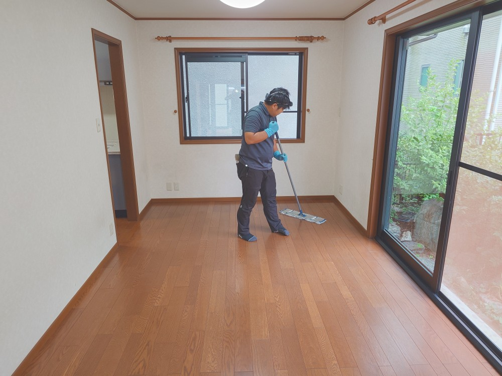
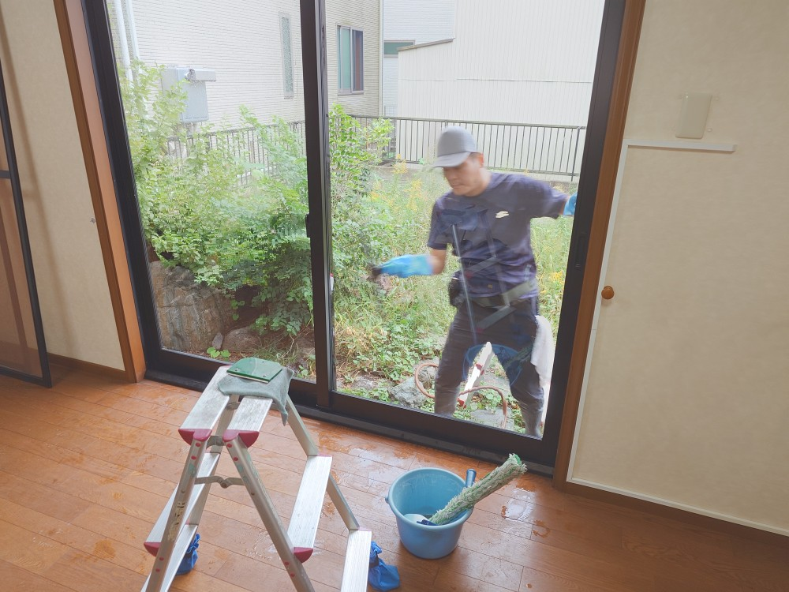
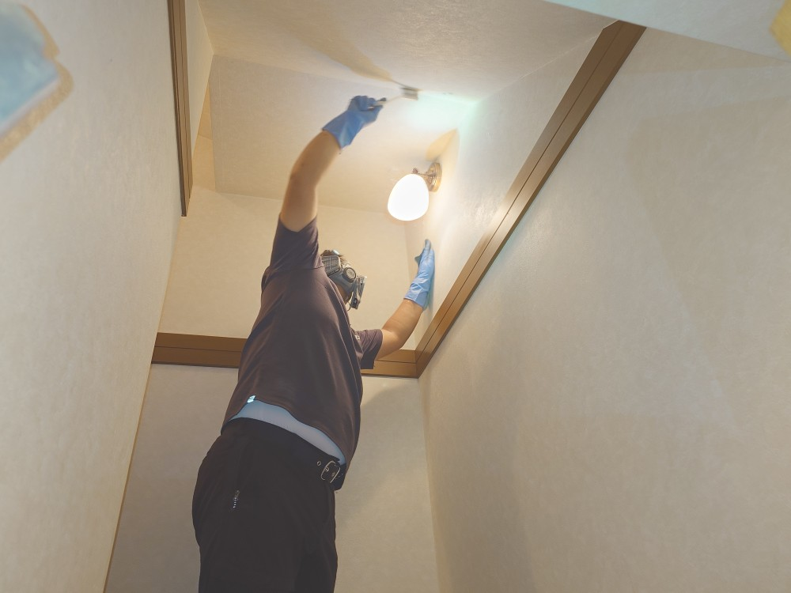
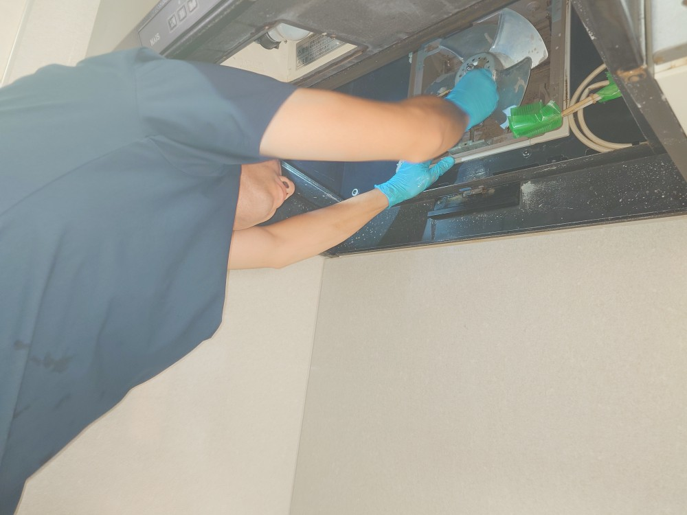
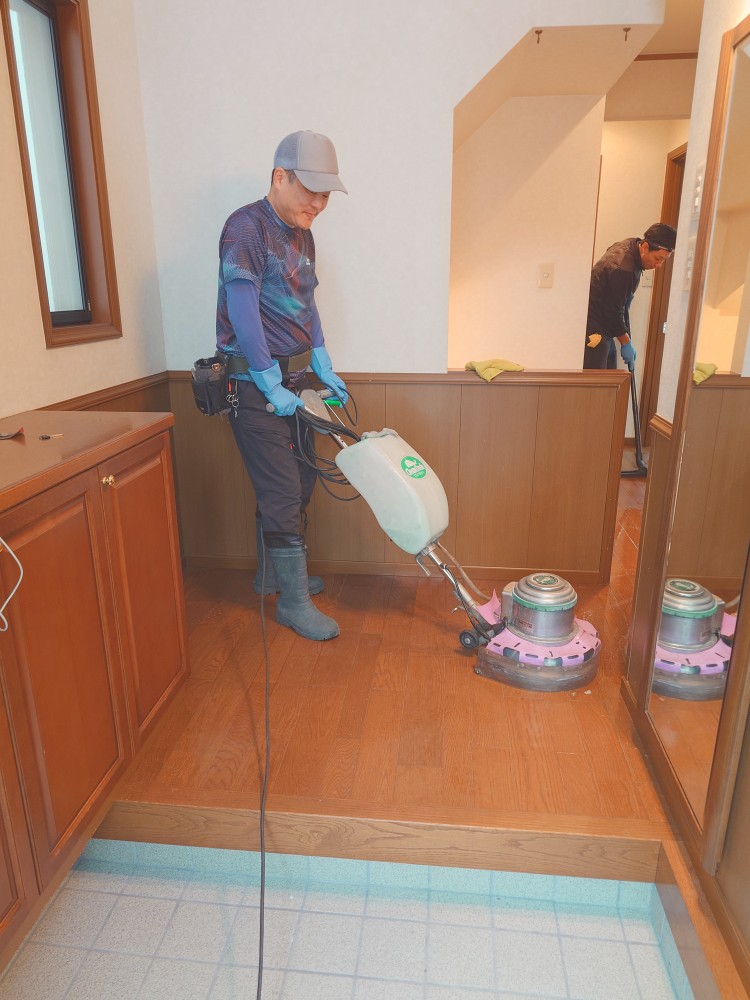
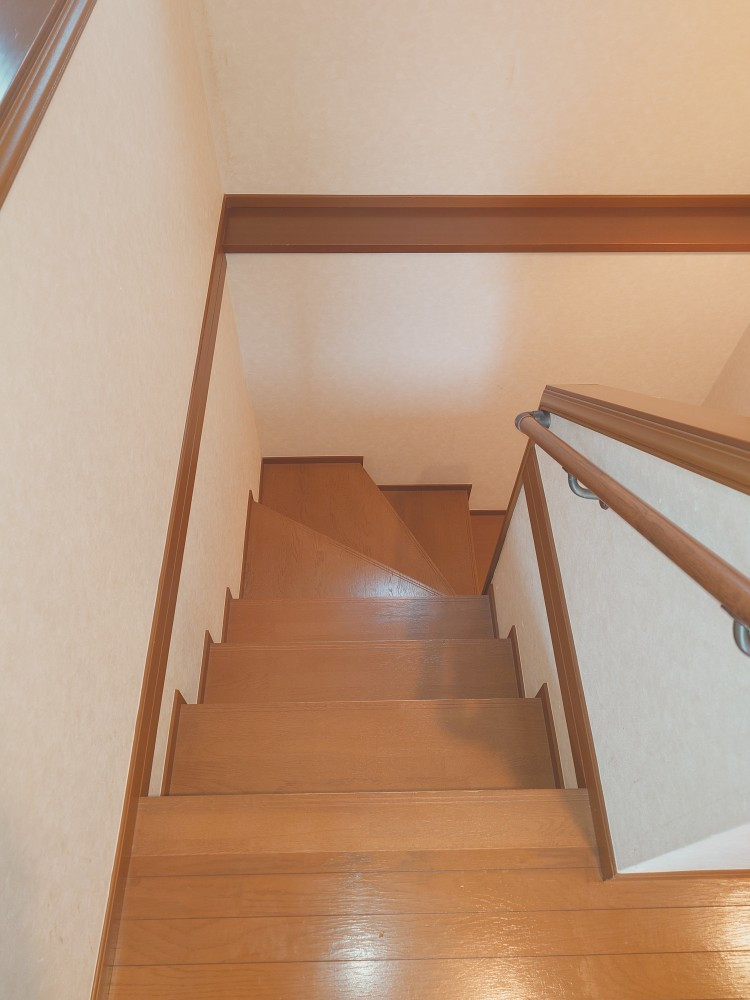

横浜市保土ケ谷区のK様ご自宅一戸建ての販売前完全空室ハウスクリーニングを実施しました!
横浜市保土ヶ谷区のK様ご自宅一戸建ての販売前の空室ハウスクリーニングを実施しました!Ｋ様ご自宅は4LDKプラス地下室があり140㎡超の大きな一戸建てです。今回売却を実施するにあたり、完全クリーニング実施をご希望なされましたので、DAIZENプロフェッショナルクリーニングメソッド完全空室クリーニングを、3日間掛けてエキスパート4名体制で実施しました!特に地下は湿気によるカビ汚れがあり、完全除去に相当の時間と工数とテクニックが必要でした。一戸建てなので、各部屋ごとに大きめの窓・サッシ・網戸があります、堆積汚れがありますので、全ての窓を取り外しての完全プロフェッショナルクリーニングを実施しました。水回り、玄関、エントランスも全て完全プロフェッショナルクリーニングを実施して、高い値段で売却出来る様にDAIZENメソッドを駆使して綺麗にしました。ぜひDAIZENメソッドの完全空室ハウスクリーニングをお試し下さい！





